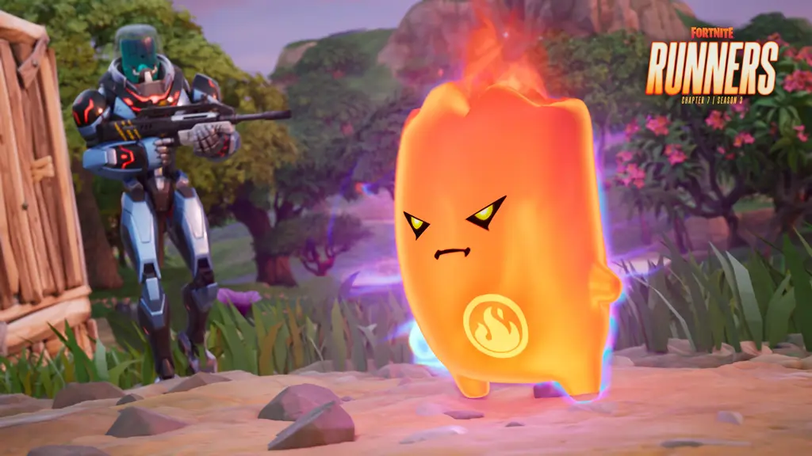
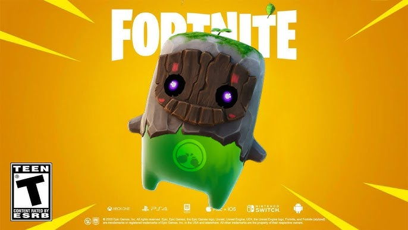
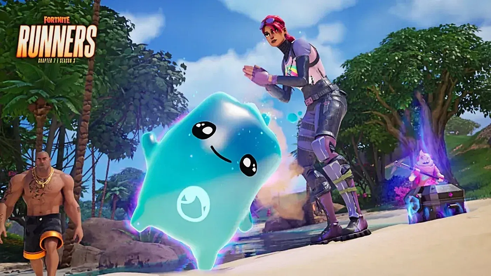

Sprites are the newest addition to Fortnite, and it is crucial to understand how they work and what they do as the system can be quite confusing at first. Sprites are only in public matches, and they are not usable in competitive. First sprites are small creatures that can be found all around the map and once equipped they sit on your back or you and grant you different passive abilities depending on the sprite you collect. You can carry sprites in your inventory, but you will not be able to level them up or gain their abilities. You can level up sprites to make their passive abilities stronger with the max level being 5. You level up sprites through eliminations, opening containers, and extracting other sprites. The most important part about sprites especially new ones is that you need to extract them so you can summon them for future use. Once a sprite is extracted you can summon them in the lobby after a match using Sprite Dust gained by extracting sprites to use them again. You can extract sprites via three ways, winning your match, using a portable extractor, or by going to one of the many extract stations on the map. It is important to note that if you lose a sprite in a match even if you have it mastered at level 5 when summoned back, they will be at level one. Although you can extract multiple of the same sprites only the one with the highest level will go to your sprite locker. Finally, sprites can also have special variants that have the same passive abilities as the base versions, but they come with an additional bonus. Ex. The gold versions give bonus exp. per elimination. Although sprites a cool addition to the game they do not have the biggest impact but in certain situations and a high level they can help you earn a victory royale and I will grade them from A+ to F depending on good they are to use.

The fire sprite is sadly the worst of the three rare sprites and one of the worst sprites in general. Its ability leaves fire on the ground after you do some damage to enemies. The higher the level the more damage the fire does, and the radius of the spawned fire is increased. The main problem with the sprite is that most of the time by the time the ability activates you have already done enough damage to get the elimination, or they are so low that they are already moving to escape you meaning more often than not they would only take a second or two of fire damage. Also, the fire can damage you as well so if the ability pops in a close range fight you also must rotate out of the area to not die to your own ability. In addition, if your opponent does not make it out of the fire you have to wait for the fire to burn out to get their loot wasting valuable time, because of these issues I give the fire sprite a C-.

The earth sprite can be a very valuable asset to carry. Its ability allows for you to have the potential to find more rare loot out of chests, with each level increasing higher loot odds. Since this can speed up the time it takes to get valuable loot this is a sprite that earns a B+ grade.

The water sprite is the best of the three rare sprites as its ability gives shields to you and your nearby teammates while in water. Although the ability is locked to the water the map has lots or water on it with the Sunken Shores POI being partially underwater making this a great sprite to have when landing there. As this sprite levels up, it gives more shield each time it heals you. This is very good since even at the base level it can heal up 1 to 3 shield per second and at max level 1 to 8 shield per second. This is a B+ sprite only because it is limited to water and even at max level you could be healed for the same amount per second as the level 1 version.
Back to Homepage